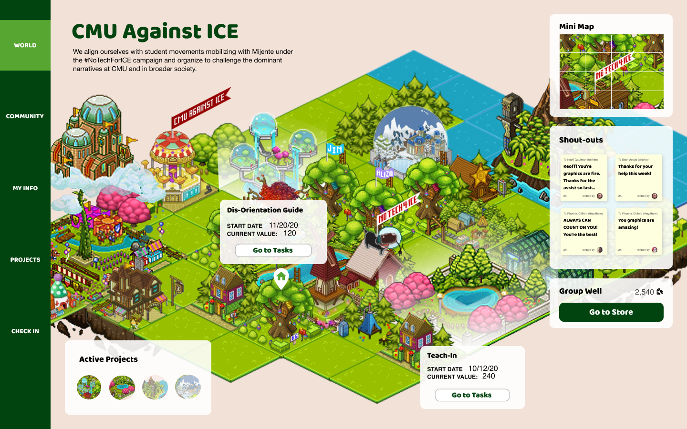
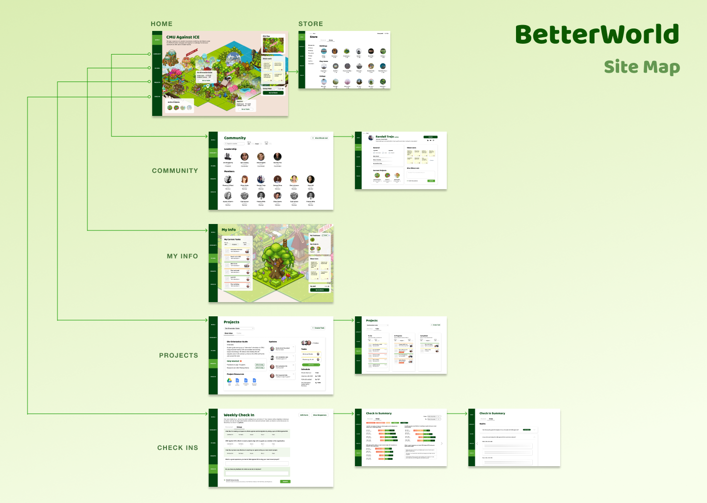
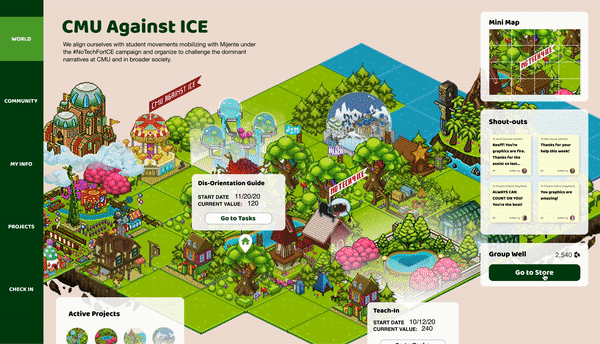
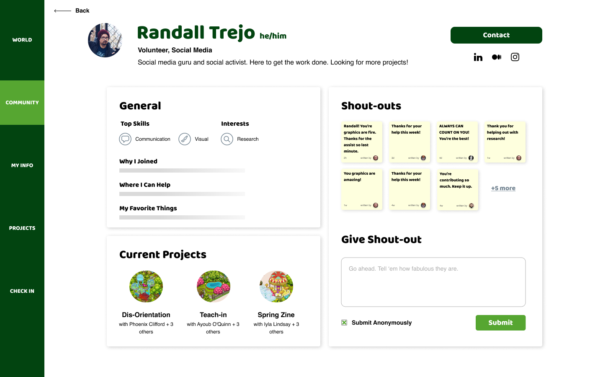
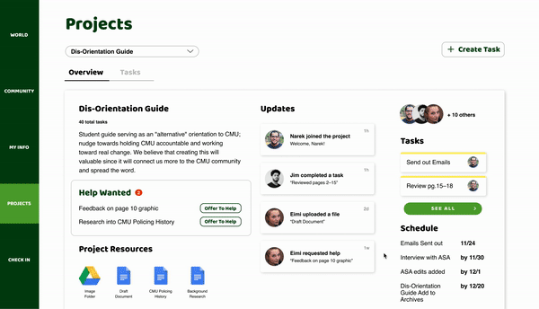
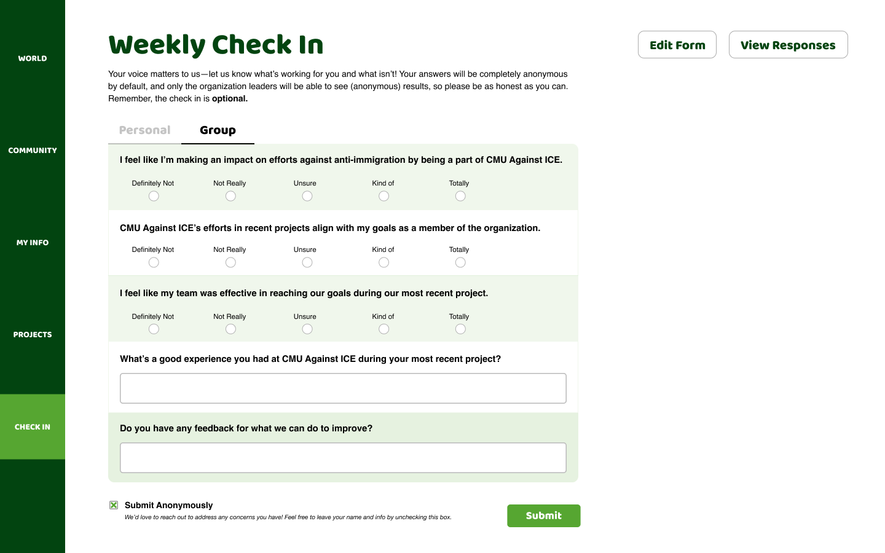

BetterWorld
TL;DR
My Role
UX Researcher
The Team
Daniel Le Compte, Amanda Crawford, Thuy-Vy Nguyen, Connor Shannon, Janelle Wen, Amy Zhuang
Timeline
14 weeks+ September - Current
Case-Study Client
CMU Against ICE*
* Indicates project is within a course or client did not employ team
Summary
We (Team Tu) worked this past semester to deeply understand, through research, how we might assist activist organizations better engage their members for more meaningful and long-term work. We designed a tool, BetterWorld, to combine the powerful effects of visualizing the nebulous work that is activism with a flexible, yet structured format for task and project management and visibility into institutional and group knowledge.
We utilized a focus group approach to understand the general problem space and refine our research questions. Then we conducted an initial round of generative research to learn more about X, Y, and Z, through a Literature Review and qualitative interviews with two groups of users: End-Users who are members of these activist organizations, and stakeholders who are the leaders and organizers of these organizations.
From here, we had a sufficent depth of understanding to begin thinking about how we might address our research questions and craft a design that would benefit the end-users. Through a series of brainstorming processes, rounds of feedback and critique, as well as iterative testing and re-design, we created BetterWorld.
Some members of the team are taking this project and work so far and expanding on it through a case-study approach to creating an MVP and disseminating further research.

Problem Space And Context
This project was situated within the a semester long course, where we were challenged with a student-defined project to apply persuasive techniques learned in Geoff Kaufman’s Persuasive Design class at Carnegie Mellon University, within the Human-Computer Interaction Institute. Our team focused on civic engagement with the goal of maintaining and increasing engagement among members of activist organizations. I found this topic area to be highly intriguing and right in the center of my interests to use my skills for projects, designs, and solutions that benefit others in the long-run. To understand and support activist work, we work towards addressing inequities systematically.
Activism happens on a long-term scale, with work taking months or years to achieve desired results, and progress is often difficult to measure. In order to more effectively work towards their shared mission, activists need tools that encourage sustainable, long-term engagement. They need a solution that helps effort compound over time rather than die off, as well as more visibility into institutional and group knowledge.
Process
While the Persuasive Design course had a few requirements for our project, such as general structure of the research and design process, as well as some intended methods, the implementation of these methods and full research and design process was up to us. Below is a short description of our main phases, which provided us a strong foundation for in-depth, empathetic research, as well as iterative design.
Generative research using the "New Metaphors" activity in focus groups to better understand the broader context of volunteering and social justice activism
Through a series of in-depth interviews with members of activist organizations as well as leaders of these orgs, hone in on an actionable problem that would substaintially benefit the organization and their long-term efforts
Rapidly sketch many potential solutions and systematically evaluate each to hone in a few, solid ideas that address the problem at hand
Test a few ideas by putting them in front of our target users (members and leaders), gather feedback from a diverse group of stakeholders, and pick the most promising and effective solution
Iteratively improve on this one solution through multiple rounds of testing, feedback, and increasing fidelity while honing in on a key set of features that directly benefit the users
Process (In-depth description of my portion? Research?)
This is where the problem space is described in a bit more detail. How did we take insights and use it in the design
How does this design address the problem space? How does it show an improvement of the original state into the preferred one?
Insights
Prototyped Solution
To achieve these objectives, the platform we designed incorporates persuasive techniques to help organizations visualize their progress. Our goal was to create an engaging virtual platform that could help organizations like CMU Against ICE facilitate team collaboration and intragroup connections. BetterWorld is organized into five main sections: World, Community, My Info, Projects, and Check Ins. Together, these sections create an intuitive hierarchy and flow, one that would promote group identity while affirming and aligning individuals with the group.
Feel free to explore our prototype at: bit.ly/BetterWorldPrototype
World and Personal View
Members are able to visualize their group and personal contributions to the project. Current and finished projects are manifested into structures or items of the members’ choosing. With the ability to customize the items’ names and appearance, these may be tangible indicators of the organization’s group identity.
Community Pages
The Community page is a directory of all members within the organization. Members can learn about other members and the areas they are interested in. Members may also give “shout-outs” on virtual post-its that affirm and encourage others in their contributions.
Tasks and Projects
The Tasks page is designed to emphasize collaboration over individual work. This highlights group identity and uses social proof by making clear who is contributing and encouraging members who have not yet contributed to participate more.
Check Ins
We designed both group and individual check in pages that incorporate group- and self-affirmations. These techniques have been shown to help individuals with motivation and make them more equipped to deal with hardships they may face in activism work.
Implications and take-aways
Going Forward
We are excited to expand on this work so far with further research in the spring semester. We aim to partner with an organization to collaboratively iterate on this design, implement a MVP that can be used, and test the effectiveness of the implementation and improve. Lastly, we plan on disseminating this work as a workshop or conference paper to the HCI community.